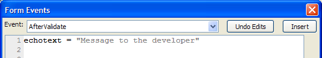
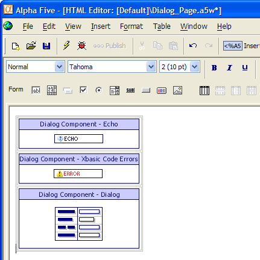
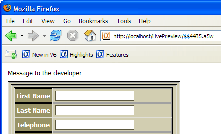
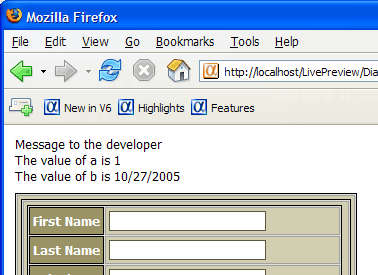

Debugging Event Handler Scripts in Dialog Components
Echotext provides a mechanism for debugging dialog component event handler scripts. Place a statement in a Server Event script similar to what is shown in the following picture.

When you place the dialog component on a page, you will see a new "Echo" part in the dialog component.

When you publish the page and click the submit button, you will see the following.

In general the strategy would be to place echotext
= echotext + "message
" after each statement
that generates a value that you want to examine.
|
echotext = echotext + "Message to the developer ' some code a = 1 echotext = echotext + "The value of a is " + a
+ " ' some more code b = date() echotext = echotext + "The value of b is " + b
+ " ' etc |

Supported By
Alpha Five Version 6 and Above. Not needed by Version 11 Ajax Dialogs
Limitations
Web publishing applications only.